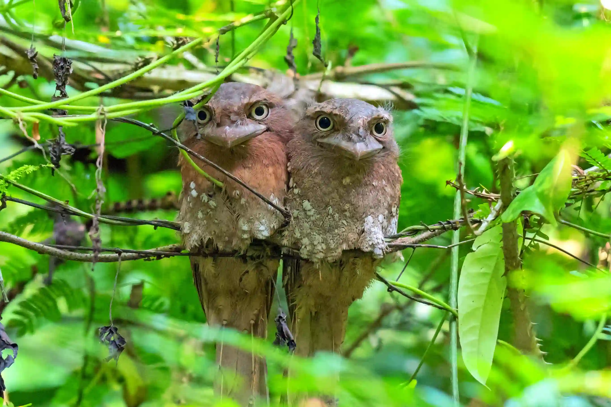

Published: April 30, 2026 | By Local Guide

The **Sri Lanka Frogmouth** (Batrachostomus moniliger) is the most sought-after species in the Thattekad Bird Sanctuary. Known for its incredible camouflage that mimics dried leaves, finding one requires an expert eye.
They prefer the dense, shaded undergrowth of the evergreen sections of the sanctuary. They usually roost in the same spot for days, which is why our local knowledge is vital for a successful sighting.
Because they are nocturnal, they remain perfectly still during the day. This provides a world-class opportunity for bird photographers to capture high-detail shots without the bird flying away.